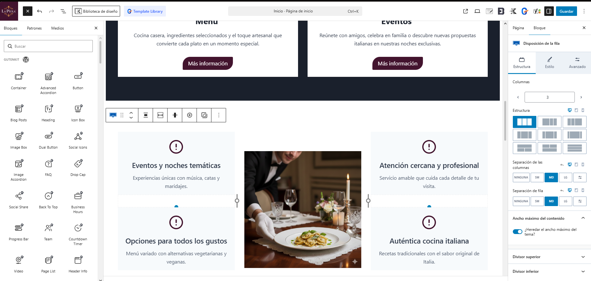
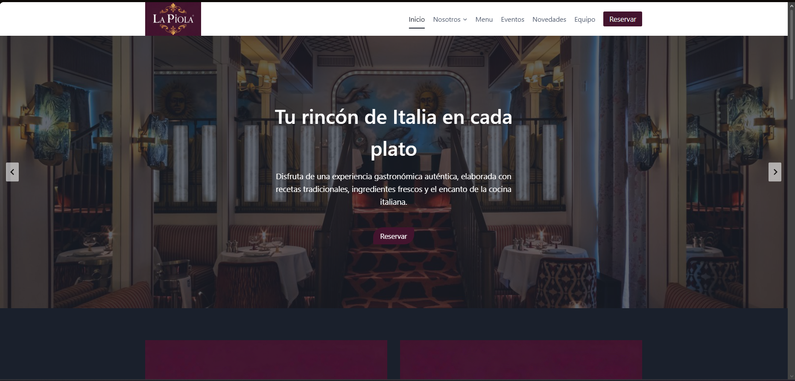
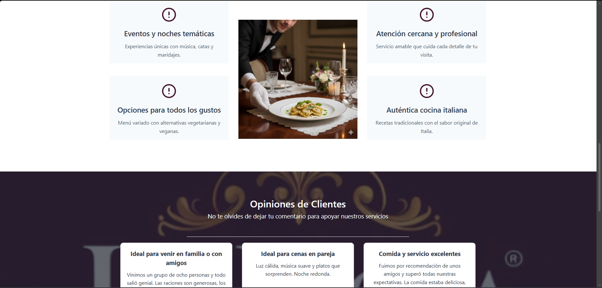
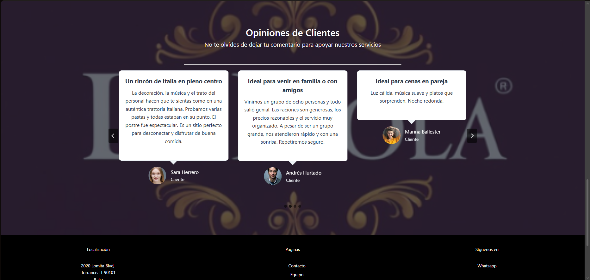

Portafolio personal
Proyecto web creado desde cero para mostrar mis habilidades y certificaciones.
Tecnologías usadas: HTML y CSS
Ver repositorio(GitHub)Mi nombre es Carlos Herrero, soy un profesional de IT en formación continua, soy un apasionado por el desarrollo web y el desarrollo de aplicaciones multiplataforma, este 2026 quiero cursar DAM (Desarrollo de Aplicaciones Multiplataforma) y mejorar mi CV y experiencia. Me gusta crear soluciones prácticas, aprender nuevas herramientas y mejorar cada proyecto que hago. Disfruto entendiendo el funcionamiento de las cosas y convertir mis ideas en proyectos reales y funcionales. Mi motivación hacía tecnología empezo a los 12 años, con esa edad copiaba codigo de páginas web para pasarlo al CMD y ver que le pasaba al ordenador.
Mis actuales objetivos profesionales son conseguir empleo en un entorno técnico sólido, desarrollar un perfil técnico especializado y mejorar mis habilidades.
Las principales tecnologías que estoy aprendiendo son HTML, CSS, Python y Java y un poco de JavaScript.
Proyecto web creado desde cero para mostrar mis habilidades y certificaciones.
Tecnologías usadas: HTML y CSS
Ver repositorio(GitHub)Proyecto web desarrollado con la tecnologia de wordpress
Tecnologías usadas: Wordpress + plugins
Pagina de Wordpress



Pulse en los enlaces para ver mis certificaciones
Formarcarm: Gestor de contenido WordpressEsta sección esta destinada a mostrar los conocimientos y logros que voy a adquirir a lo largo de los próximos años
Java - 2026/2027
conocimientos de nivel intermedio + creación de una pequeña app